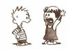

Văn hóa tranh luận và vấn đề ngụy biện Bàn Tân Định Tranh luận trên các diễn đàn công cộng là một hình thức trao đổi ý kiến không thể thiếu được trong các thể chế dân chủ và văn minh. Ở nhiều nước Tây phương, lưu lượng của những tranh luận cởi mở và nghiêm túc được xem là một dấu hiệu của một xã hội lành mạnh. Nhưng thế nào là tranh luận nghiêm túc? Nói một cách ngắn gọn, cũng như trong một cuộc đấu võ, một tranh luận nghiêm túc là một cuộc tranh luận có qui tắc hẳn hoi, mà trong đó người tham gia không được, hay cần phải tránh, phạm luật chơi. Những qui tắc chung và căn bản là người tham gia chỉ phát biểu bằng cách vận dụng những lí lẽ logic, với thái độ thành thật và cởi mở, chứ không phát biểu theo cảm tính, lười biếng, hay biểu hiện một sự thiển cận, đầu óc hẹp hòi. Để đạt những yêu cầu này, người tranh luận nghiêm túc trước khi phát biểu hay đề xuất ý kiến, đưa ra lời bình phẩm của mình, cần phải xem xét tất cả các trường hợp khả dĩ, phải cân nhắc những quan điểm và những cách giải thích khác nhau, phải đánh giá ảnh hưởng của sự chủ quan và cảm tính, phải chú tâm vào việc tìm sự thật hơn là muốn mình đúng, sẵn sàng chấp nhận những quan điểm không được nhiều người ưa chuộng, và phải ý thức được định kiến và chủ quan của chính mình. Khi tranh luận phải nhất quán là chỉ xoay quanh chủ đề bàn luận, luận điểm bàn luận chứ không đi lạc đề. Không nhằm vào cá nhân và bản thân của người tham gia tranh luận.  Đó là những đòi hỏi khó khăn cho một cuộc tranh luận nghiêm túc có ý nghĩa, và không phải ai cũng có khả năng đạt được những yêu cầu này. Thành ra, không mấy ai ngạc nhiên khi thấy có quá nhiều trường hợp chất lượng của cuộc tranh luận rất thấp. Chỉ cần xem qua những lần tranh luận trên các đài truyền hình (ở Úc chẳng hạn), người ta có thể thấy đó không phải là tranh luận, mà là những cuộc đụng độ giũa các cá nhân tham gia tranh luận (nhất là các quan chức) thay vì đương đầu với lí luận của người tranh luận. Ngoài ra, đối với một số lớn chính trị gia, nghệ sĩ, và khoa học gia, được xuất hiện trên ti-vi để bình luận về một câu chuyện nào đó là một cuộc dàn xếp, một lần đóng kịch không hơn không kém. Nó là một kịch bản ngớ ngẩn đã được dàn xếp sẵn. Ngớ ngẩn là vì người xuất hiện chẳng nói được gì cho đầy đủ, mà cũng chẳng phân tích một vấn đề gì cho đến nơi đến chốn. Thực ra, họ xuất hiện để được ghi nhận, để được [nói theo tiếng Anh] là “to be seen”. Đối với các chính trị gia, nghệ sĩ, và khoa học gia loại này, “to be seen” là một phương tiện sống còn của họ trong xã hội, là một cách nói “Tôi vẫn còn đây”. Điều này có nghĩa là càng xuất hiện nhiều trên ti-vi nhiều chừng nào càng đem lại lợi ích cá nhân cho họ. Thành ra, ti-vi ngày nay đã trở thành một tấm gương cho những anh chàng bảnh trai Narcissus hiện đại phô bày bộ mặt của họ, chứ không cống hiến gì nhiều cho một xã hội dân chủ. Mà cũng chẳng riêng gì ở Úc, tình trạng nghèo nàn về tranh luận này đã và đang xảy ra ở Âu châu. Trong mấy tháng gần đây, giới khoa học Âu châu đang lên cơn sốt “Holocaust” (cuộc tàn sát người Do thái, trước và trong thế chiến thứ II). Bất cứ một nhà khoa học nào, nghệ sĩ nào dám chất vấn những quan điểm “chính thống” về thực phẩm, về bệnh AIDS, về cuộc xung đột ở Kosovo, về sự kiện hôm 11/9 ở Mĩ, hay về môi trường đều bị dán cho một nhãn hiệu là bạn của Nazi. Giáo sư Bjorn Lomborg mới lên tiếng chất vấn những con số thống kê về môi trường liền bị gắn cho nhãn hiệu “giống như Nazi”. Những ai dám chất vấn mối liên hệ giữa vi khuẩn HIV và bệnh AIDS liền bị tố cáo là “muốn cho thế giới này có một Holocaust thứ hai”. Thật vậy, ở Âu châu ngày nay xuất hiện một xu hướng mà những quan điểm đã được xem là “chính thống” thì không ai được chất vấn. Cái xu hướng này nó đang ăn sâu vào xã hội và giới truyền thông đến nổi một nhà trí thức Anh phải than phiền là nếu không ngăn chận, nó có cơ đem xã hội Âu châu quay trở lại thời Trung cổ, thời mà không ai dám chất vấn những gì Vatican phán. Trong cộng đồng người Việt, vấn đề này còn nghiêm trọng hơn. Rất nhiều trường hợp, những cuộc tranh luận trong cộng đồng đã trở thành những cuộc chửi lộn, mà trong đó người tham gia tha hồ vung vít, ném liệng vốn liếng chữ nghĩa qua lại một cách hỗn độn, mà chẳng cần để ý đến logic hay các nguyên tắc của tranh luận là gì. Hơn nữa, rất dễ dàng nhận thấy rằng trong các cuộc tranh luận đó người ta nhắm vào mục tiêu là bản thân, cá nhân của người tranh luận chứ không nhắm vào quan điểm và lí lẽ của người đó. Một đơn cử, mới đây, những bài viết liên quan đến biên giới, thay vì bàn luận thẳng vào vấn đề, người ta có khuynh hướng công kích vào cá nhân người viết. Những danh từ, tính từ hết sức vô văn hóa được mang ra dùng cho tác giả. Thay vì dùng những chữ như Holocaust, Nazi, người Việt có những cụm từ đánh vào chỗ nhạy cảm của quần chúng. Trong hầu như những tranh luận liên quan đến Việt Nam, nhiều người cố tìm hay tạo cho mình một vị trí đạo đức cao cả bằng cách gắn cho đối phương một trong hai cụm từ trên, một thủ đoạn có khả năng làm cho một cuộc tranh luận trở nên một cuộc ẩu đã ngôn từ đinh tai nhức óc. Tại sao anh dám nói chúng tôi sai? Anh là một tên phản bội dân tộc. Tức là, thay vì tranh luận thẳng vào vấn đề, người ta tìm cách gắn cho đối phương một nhãn hiệu, và từ đó làm lu mờ đi quan điểm của họ. Thực ra, đó là một hình thức ngụy biện, một lỗi lầm cơ bản nhưng nghiêm trọng trong tranh luận. Nói một cách đơn giản, ngụy biện là những nhầm lẫn trong lí luận và suy luận. Ngụy biện khác với logic. Logic, nói một cách ngắn gọn trong trường hợp này, là những luật lệ hay qui tắc quản lí tính nhất quán trong việc sử dụng ngôn ngữ. Từ nhiều thế kỉ qua, giới triết học Tây phương đã bỏ khá nhiều công sức để phân biệt thế nào là logic và thế nào là ngụy biện. Aristotle là một nhà logic học đầu tiên có công phát triển các qui tắc và hệ thống suy luận. Trong quá trình làm việc, ông phát hiện ra nhiều lỗi lầm mà sau này người ta quen gọi là những “ngụy biện.” Mặc dù Aristotle là một nhà nhà logic học đầu tiên có công liệt kê và phân loại những loại ngụy biện, thầy của ông (Plato) mới xứng đáng được vinh danh như là một nhà triết học đầu tiên đã có công sưu tầm những ví dụ về ngụy biện. Kể từ khi Plato và Aristotle, đã có khá nhiều nhà triết học và logic học như John Locke, John Stuart Mill, Jeremy Bentham, và Arthur Schopenhauer cũng có nhiều cống hiến quan trọng trong việc nghiên cứu về ngụy biện. Thực ra, nhận dạng ngụy biện không phải là một việc làm khó khăn. Nói chung chỉ với một lương năng bình dân, người ta có thể phân biệt một phát biểu mang tính ngụy biện với một phát biểu logic. Tuy nhiên, cũng có nhiều dạng thức ngụy biện mà vẻ bề ngoài hay mới nghe qua thì rất logic, nhưng thực chất là phi logic. Những loại ngụy biện núp dưới hình thức “khoa học” này không dễ nhận dạng nếu người đối thoại thiếu kiến thức về logic học hay thờ ơ với lí lẽ. Do đó, một điều quan trọng trong tranh luận là cần phải phát hiện và nhận dạng những hình thức ngụy biện, và quan trọng hơn, cần phải hiểu tại sao chúng sai. Có thể phân loại ngụy biện thành nhiều nhóm khác nhau liên quan đến việc đánh lạc vấn đề, lợi dụng cảm tính, thay đổi chủ đề, nhầm lẫn trong thuật qui nạp, lí luận nhập nhằng, phi logic, và sai phạm trù. Trong khuôn khổ giới hạn của bài viết, người viết bài này không có tham vọng trình bày tất cả những loại ngụy biện một cách chi tiết (vì việc này đã được hệ thống hóa trong nhiều sách về logic học), mà chỉ muốn liệt kê ra những loại ngụy biện thường hay gặp trong báo chí và truyền thông, hầu giúp bạn đọc có thể nhận dạng ra chân-giả. Nhóm 1. Thay đổi chủ đề 1. Công kích cá nhân (ad hominem). Đây là một loại ngụy biện phổ biến nhất, nguy hiểm nhất, và có “công hiệu” nhất, vì nó tấn công vào cá nhân của người tranh luận, và tìm cách trốn tránh luận điểm của cá nhân đó. Hình thức ngụy biện này thường xuất hiện dưới dạng: Ông A phát biểu về một vấn đề; ông B tấn công vào cá nhân ông A, và làm cho người ta nghi ngờ luận điểm của ông A. Tuy nhiên, có thể không có mối liên hệ nào giữa cá nhân và luận điểm của ông A. Có hai hình thức thuộc loại ngụy biện này. Thứ nhất là dưới hình thức sỉ nhục, hay chửi rủa. Khi bất đồng ý kiến, người ngụy biện chỉ việc công kích vào cá nhân của người phát biểu. Chẳng hạn như “Ông nói là những người vô thần có đạo đức, vậy mà chính ông là người từng li dị với vợ con,” hay “Ông ta đang làm ăn với phía Việt Nam, tất nhiên ông ta phải nói tốt về Việt Nam”. Đây là một ngụy biện, bởi vì sự thật của phát biểu không tùy thuộc vào cá nhân của người phát biểu mà là logic của lời phát biểu. Một cách ngụy biện khác cũng dựa vào cách nói này là dùng một nhân vật khác, chẳng hạn như “Vậy thì chúng ta hãy đóng cửa nhà thờ cả đi. Hitler đã chắc hẳn sẽ đồng ý với anh.” Hình thức ngụy biện thứ hai trong loại này là người ngụy biện cố gắng thuyết phục người đối thoại chấp nhận luận điểm của họ bằng cách đề cập đến hoàn cảnh của cá nhân đó. Ví dụ: “Anh nói là không nên uống rượu, vậy mà anh đã từng ngất ngưởng cả năm qua.” Cũng nằm trong loại ngụy biện này là thói dùng một đặc điểm của một vật thể nào đó để ứng dụng cho một cá nhân hay một vật thể khác. Ví dụ: “Anh theo học trong một trường dành cho con nhà giàu. Do đó, anh là một người giàu có, anh không hiểu gì về sự nghèo khổ.” 2. Lợi dụng quyền lực (ad verecundiam). Đây là loại ngụy biện dùng những nhân vật nổi tiếng hay được nhiều người ái mộ để tìm sự ủng hộ cho luận điểm của mình. Chẳng hạn như “Isaac Newton là một thiên tài, và ông tin vào Thượng đế.” Đây không hẳn là một lí lẽ hư, nó có thể có liên hệ đến một nhân vật có uy tín trong một lĩnh vực nào đó, nếu người ta thảo luận về lĩnh vực đó. Chẳng hạn như phải phân biệt giữa hai phát biểu “Ông Hawking (Stephen Hawking, nhà Vật lí Lí thuyết đương đại nổi tiếng người Anh) kết luận rằng những lỗ đen (black holes) có thể phát ra phóng xạ”, và “Ông Penrose cho rằng xây dựng một cái máy điện toán thông minh là một điều có thể làm được.” Nếu ông Hawking là một nhà vật lí thì chúng ta có thể tin vào ý kiến của ông về những lỗ đen. Nhưng nếu ông Penrose là một nhà toán học, thì chúng ta có quyền chất vấn ông ta có đủ thẩm quyền để bàn về đề tài thông minh nhân tạo hay không? 3. Lợi dụng quyền lực nặc danh. Trong trường hợp này, người ngụy biện không nêu danh tính người có thẩm quyền, và vì không ai biết tên người có thẩm quyền nên không ai có thể kiểm chứng sự chính xác của lời phát biểu. Một loại ngụy biện khác có quan hệ với loại này là dùng lời đồn đại để làm cơ sở lập luận. Ví dụ như “Một viên chức tình báo trong chính phủ Úc cho rằng chính anh từng hoạt động cho địch.” 4. Lợi dụng tác phong. Loại ngụy biện này dùng tác phong hay cách làm việc hay một đặc tính nào đó của đối tượng để cố thuyết phục về sự hợp lí của phát biểu. Tiêu biểu cho loại ngụy biện này là những phát biểu như “Nixon thất cử vì ông ta thường hay ra mồ hôi trên trán,” hay “Tại sao anh không nghe theo lời khuyên của anh chàng ăn mặc bảnh bao đó?” Thực ra, “bảnh bao” và “mồ hôi trên trán” chẳng có dính dáng gì đến vấn đề đang bàn thảo. 5. Luận điệu cá trích. Loại ngụy biện này thường hay được ứng dụng khi một người nào đó đưa vào những phát biểu không dính dáng gì đến vấn đề đang tranh luận, nhằm mục đích đánh lạc hướng vấn đề. Ví dụ: “Anh có thể nói rằng tử hình là một hình thức không có hiệu quả trong việc chống lại tội phạm, nhưng còn nạn nhân của tội phạm thì sao? Gia đình của nạn nhân sẽ nghĩ gì khi họ thấy tên sát nhân người thân của họ bị giam giữ trong nhà tù bằng đồng tiền của chính họ. Họ có nên nuôi dưỡng những tên sát nhân như thế không?” 6. Luận điệu ngược ngạo. Bằng chứng luôn luôn là gánh nặng của người phát biểu. Do đó, tìm cách di chuyển gánh nặng đó cho một người khác là một thủ thuật giới ngụy biện hay dùng. Chẳng hạn như trong câu này “Được rồi, vậy anh không tin là có người ngoài hành tinh đã từng chi phối đến chính phủ Mỹ, nhưng anh có thể chứng minh điều đó không,” đáng lẽ người phát biểu phải chứng minh, nhưng công việc đó lại được chuyển cho người đối thoại! Nhóm 2. Lợi dụng cảm tính và đám đông 7. Dựa vào bạo lực (ad baculum). Ngụy biện dựa vào bạo lực thực chất là một sự đe dọa, nhằm mục đích gây áp lực cho người đối thoại phải chấp nhận một kết luận nào đó. Loại ngụy biện này thưởng được giới chính khách dùng, và có thể tóm gọn bằng một câu “chân lí thuộc về kẻ mạnh”. Sự đe dọa không hẳn chỉ xuất phát từ người phát biểu, mà có thể từ một người khác. Ví dụ như “Những ai không tin vào Kinh thánh sẽ bị thiêu cháy dưới đáy địa ngục”, hay “Thôi được rồi, tôi đã biết số điện thoại của anh và biết anh đang ở đâu. À, tôi có nói cho anh biết là tôi có giấy phép mang súng chưa nhỉ?” 8. Lợi dụng lòng thương hại (ad misericordiam). Đây là một loại ngụy biện dựa vào lòng trắc ẩn của người đối thoại để người đối thoại chấp nhận lí lẽ của mình. Ví dụ như “Anh ấy không có giết người bằng búa. Làm ơn đừng tuyên án anh ấy có tội, anh ấy đang trải qua một giai đoạn khủng hoảng tinh thần,” hay “Tôi hi vọng anh sẽ chấp nhận đề nghị này, chúng ta đã tiêu ra ba tháng nay rồi đấy.” 9. Lợi dụng hậu quả (ad consequentiam). Ngụy biện loại này thường được biểu hiện qua cách phát biểu “A hàm ý B, B là sự thật, do đó A là sự thật”. Ví dụ: “Nếu vũ trụ được một đấng chí tôn thượng đế tạo nên, chúng ta có thể thấy những hiện tượng được tổ chức một cách thứ tự. Và hiện tượng chung quanh chúng ta quả rất thứ tự, vậy đấng chí tôn thượng đế chính là người tạo nên vũ trụ,” hay “Anh phải tin vào Thượng đế, chứ nếu không cuộc đời này sẽ chẳng có ý nghĩa” (hay là nói một cách ngược lại: cuộc sống này chẳng có ý nghĩa gì nếu Thượng đế hiện hữu!) 10. Lạm dụng chữ nghĩa. Đây là một loại ngụy biện dựa vào dùng những chữ mang cảm tính cao để gắn một giá trị đạo đức vào một đề nghị hay một câu phát biểu. Chẳng hạn như trong câu “Bất cứ một người có lương tri nào cũng phải đồng ý rằng về Việt Nam ăn Tết là làm lợi cho cộng sản,” chữ “lương tri” được cài vào nhằm cho người đối thoại phải nghiêng theo những người có lương tri. 11. Dựa vào quần chúng (ad numerum). Loại ngụy biện này tin rằng nếu có nhiều người ủng hộ một đề nghị nào đó, thì đề nghị đó phải đúng. Ví dụ như “Đại đa số người dân trong cộng đồng ủng hộ ông Minh, vậy phát biểu của ông Minh ắt phải đúng.” Liên hệ với loại ngụy biện này là hình thức tranh thủ sự ủng hộ của đám đông để cố gắng cho thấy luận điểm của mình là đúng. Ví dụ: “Ai cũng biết Bộ Y tế làm là đúng, sao anh dám nói là sai? Hay là anh muốn nói chúng tôi là những kẻ ngu xuẩn?” Nhóm 3. Làm lạc hướng vấn đề 12. Lí lẽ chẻ đôi. Loại ngụy biện này thường phân định một vấn đề thành hai giá trị: trắng và đen, bạn và thù, có và không, v.v.. dù trong thực tế, có hơn hai lựa chọn. Chẳng hạn như “Hoặc là anh hợp tác với tôi hay là anh chống tôi, anh chọn hướng nào, yes hay là no?”, hay “Đối với Mỹ, anh chỉ có hai lựa chọn: thương hay ghét, trả lời đi!” 13. Lí lẽ ngờ nghệch (ad ignorantiam). Loại ngụy biện này, như tên gọi ám chỉ, xuất phát từ sự ngờ nghệch. Một trong những cách nói thông thường nhất trong loại ngụy biện này mà giới ngụy biện dùng là nếu một điều gì đó chưa được chứng minh là sai (hay giả) thì điều đó là đúng (hay thật). Ví dụ: “Bởi vì các nhà khoa học chưa chứng minh dioxin có thể gây ra dị thai, do đó dioxin không thể gây ra dị thai,” hay kiểu lí luận của John Howard “Hiến pháp Úc đã tồn tại cả trăm năm nay, và xã hội ổn định, không có lí do gì phải thay đổi hiến pháp”. 14. Lí luận lươn trạch. Loại ngụy biện này cho rằng nếu một sự kiện xảy ra, các sự kiện có hại khác sẽ xảy ra. Chẳng hạn như “Nếu chúng ta hợp pháp hóa marijuana, công chúng sẽ bắt đầu hút á phiện, và chúng ta cũng sẽ phải hợp pháp hóa á phiện. Rồi chúng ta sẽ là một quốc gia với những người ăn bám vào xã hội. Do đó, chúng ta không thể hợp pháp hóa á marijuana”. Hay một đoạn ví dụ khác:” Tiếc thay một cuộc cải cách về kinh tế, bình bị, tài chánh, xã hội, nông nghiệp như vậy, đang trên đường thành công rực rỡ: bị tan vỡ, bị huỷ bỏ chỉ vì tham vọng đánh Đại việt của Vương An Thạch. Mà đau đớn biết bao, khi người phá vỡ chỉ là một thiếu phụ Việt ở tuổi ba mươi. Giá như Thạch không chủ trương Nam xâm, chỉ cần mười năm nữa, toàn bộ xã hội Trung quốc thay đổi; rồi với cái đà đó, thì Trung quốc sẽ là nước hùng mạnh vô song, e rằng cứ muôn đời mặt trời vẫn nở phương Đông chứ không ngả về Tây như hồi thế kỷ 18 cho đến nay bao giờ.” 15. Mệnh đề rời rạc. Đây là loại ngụy biện dùng hai (hay nhiều hơn hai) mệnh đề chẳng dính dáng gì với nhau để làm thành một phát biểu hay kết luận. Ví dụ: “Anh ủng hộ tự do dân chủ và quyền mang vũ khí hay không?” hay “Anh đã ngưng làm ăn trái phép chưa?” Câu hỏi sau thực ra hỏi hai vấn đề “Anh từng làm ăn trái phép?” và “Anh đã ngừng hoạt động hay chưa?” 16. Đơn giản hóa vấn đề. Đây là một loại ngụy biện mà người phát biểu cố tình biến một quan niệm trừu tượng thành một điều cụ thể để bắt lấy thế thượng phong trong đối thoại (nhưng là ngụy biện). Ví dụ: “Tôi để ý thấy anh mô tả ông ta là một người quỉ quyệt. Vậy tôi hỏi anh cái “quỉ quyệt” đó nó nằm ở đâu trong bộ não? Anh không chỉ ra được cho tôi; do đó, tôi có thể nói cái quỉ quyệt không có thực.”
Nhóm 4. Qui nạp sai 17. Khái quát hóa vội vã. Loại ngụy biện này cũng khá phổ biến. Nó dùng một ví dụ hay trường hợp nhỏ và từ đó khái quát hóa cho một cộng đồng. Chẳng hạn như “Jim Baker là một tay đạo đức giả. Do đó, các tín đồ Cơ đốc giáo là giả dối.” 18. Khái quát hóa không đúng chỗ. Đây là loại ngụy biện mà người sử dụng chúng thường áp dụng một qui luật chung cho một tình huống hay một cá nhân. Chẳng hạn như “Người Phật giáo là vô thần. Anh là phật tử, vậy anh chắc chắn là một người vô thần.” 19. Kéo dài tính tương đồng. Trong loại ngụy biện này, người dùng nó đề nghị một điều lệ chung chung, rồi ứng dụng nó cho mọi trường hợp và cá nhân. Ví dụ: “Tôi tin rằng chống luật pháp bằng cách phạm luật pháp là một điều sai trái”, hay “Nhưng quan điểm đó ghê tởm lắm, vì nó ám chỉ rằng anh sẽ không ủng hộ Martin Luther King,” hay “Anh muốn nói rằng luật về mật mã cũng có tầm quan trọng tương đương với phong trào giải phóng người da đen hay sao? Sao anh dám nói thế?” 20. Lí lẽ quanh co. Loại ngụy biện này thường lẩn quẩn trong vài giả định và kết luận. Chẳng hạn như “Những người đồng tính luyến ái nhất định không thể nắm chính quyền. Do đó, phải tống khứ những viên chức chính phủ đồng tính luyến ái. Vì thế, những người đồng tính luyến ái sẽ làm mọi cách để dấu diếm hành tung của họ, và họ có nguy cơ bị tống tiền. Do vậy, những người đồng tính luyến ái không được giữa chức vụ gì trong chính phủ.” Tức là trong một lí giải như thế, cả hai giả thuyết và kết luận đều giống nhau. 21. Đảo ngược điều kiện. Loại ngụy biện này thường được biểu hiện qua hình thức “Nếu A xảy ra thì B sẽ xảy ra, do đó, nếu B xảy ra thì A sẽ xảy ra.” Ví dụ: “Nếu tiêu chuẩn giáo dục bị hạ thấp, chất lượng tranh luận sẽ bị tồi đi. Do đó, nếu chúng ta thấy chất lượng tranh luận suy đồi trong những năm sắp đến, thì điều đó cho thấy tiêu chuẩn giáo dục của ta bị xuống cấp.” 22. Lợi dụng rủi ro. Ngụy biện này thường dùng một qui luật chung và áp dụng nó cho một trường hợp cá biệt. Ví dụ: “Luật giao thông không cho anh chạy quá 50 km/h. Cho dù cha anh sắp chết anh cũng không được chạy quá tốc độ đó.” 23. Lợi dụng trường hợp cá biệt. Ngụy biện này thường dùng một trường hợp cá biệt để đem ra ứng dụng cho một đám đông. Ví dụ: “Chúng ta cho phép bệnh nhân sắp chết dùng á phiện, chúng ta nên cho phép mọi người dùng á phiện.” 24. Kết luận lạc đề. Loại ngụy biện này thường xuất hiện khi một kết luận chẳng dính dáng gì đến lí lẽ mà người biện luận trình bày. Một ví dụ tiêu biểu cho trường hợp ngụy biện này là: “Độ nhiễm arsenic trong nước ở Việt Nam chưa cao và còn trong mức độ cho phép. Dữ kiện của Bangladesh cho thấy tình trạng nhiễm arsenic ở Việt Nam rất trầm trọng.” 25. Ngụy biện rơm. Loại ngụy biện này cố tình xuyên tạc, bóp méo quan điểm hay phát biểu của người khác, để làm luận điểm tấn công. Đây là một ngụy biện, vì nó không đương đầu với cái lí lẽ đang bàn. Chẳng hạn như: “Chúng ta nên ủng hộ chế độ cưỡng bách quân dịch. Người ta không thích tòng quân vì họ không muốn cuộc sống bị đảo lộn. Nhưng họ cần nhận thức rằng có nhiều điều quan trọng hơn tiện nghi trong cuộc sống.” Nhóm 5. Nguyên nhân giả 26. “Post hoc”. Loại ngụy biện này phát biểu rằng hai sự kiện xảy ra, một trước và một sau, có quan hệ với nhau như nguyên nhân và hậu quả. Ví dụ: “Liên Xô sụp đổ sau khi nhà nước theo chủ nghĩa vô thần. Do đó, chúng ta phải từ bỏ chủ nghĩa vô thần để khỏi bị suy sụp.” 27. Ảnh hưởng liên đới. Một sự kiện được cho là có ảnh hưởng đến một sự kiện khác, nhưng thực chất thì cả hai sự kiện đều có cùng một nguyên nhân. Đây cũng chính là một trường hợp ngụy biện dưới dạng “post hoc”. Ví dụ: “Chúng ta đang chứng kiến một tình trạng thất nghiệp rất cao, vì do thiếu nhu cầu của người tiêu thụ.” (Nhưng có thể cả hai sự kiện có nguyên nhân từ tiền lời quá cao.) 28. Ảnh hưởng không đáng kể. Đây là một loại ngụy biện mang tính phóng đại từ một ảnh hưởng rất nhỏ. Chẳng hạn như “Hút thuốc gây ra ô nhiễm môi trường ở Sydney” là một phát biểu đúng, nhưng ảnh hưởng của thuốc lá đến môi trường rất khiêm tốn khi so với ảnh hưởng của khói xe và các hãng xưởng. 29. Ảnh hưởng ngược chiều. Mối quan hệ giữa nguyên nhân và hậu quả bị đảo ngược chiều để tìm đến một kết luận mang tính ngụy biện. Ví dụ: “Ung thư gây ra thói quen hút thuốc lá”. 30. Nguyên nhân phức tạp. Một sự kiện xảy ra có thể do nhiều nguyên nhân khác nhau, nhưng người ngụy biện có thể đơn giản hóa thành một liên hệ đơn giản. Chẳng hạn như “Tai nạn xe cộ là do đường xá xấu” có thể đúng, nhưng tai nạn cũng có thể do người lái xe ẩu trong một điều kiện xấu. 31. Nguyên nhân sai (Non causa pro causa). Loại ngụy biện này xảy ra khi một điều nào đó được cho là nguyên nhân của một sự kiện, nhưng nó chưa thực sự được chứng minh là nguyên nhân. Ví dụ: “Tôi uống một viên aspirin và cầu nguyện thượng đế, và tôi không còn bị nhức đầu. Như vậy thượng đế đã chữa trị tôi khỏi nhức đầu.” Nhóm 6. Nhập nhằng 32. Lí lẽ mơ hồ. Dùng những chữ và lí lẽ mơ hồ, tối nghĩa là một hình thức ngụy biện, nhất là khi một chữ hay câu phát biểu được dùng với hai (hay nhiều hơn hai) ý nghĩa khác nhau. Ví dụ, chữ “miễn phí” trong câu sau đây có thể có nhiều nghĩa khác nhau: “Có loại nhu liệu nào rẻ hơn nhu liệu miễn phí? Nhưng để duy trì tình trạng miễn phí, chúng ta cần phải có một hệ thống đăng kí và cung cấp giấy phép cho người dùng.” Một ví dụ khác về cách nói lập lờ là “Các hành động hình sự là bất hợp pháp, và tất cả các phiên tòa xử tội giết người là hành động hình sự, vì thế tất cả các phiên tòa này bất hợp pháp”. 33. Chơi chữ (Amphiboly). Ngụy biện bằng chơi chữ dựa vào những giả thuyết mơ hồ, nhập nhằng, do bất cẩn thận hay cách phát biểu sai văn phạm. Chẳng hạn như một phát biểu kiểu như “Giả thuyết: tin vào Thượng đế sẽ lấp đi khoảng trống tinh thần” là ngụy biện, vì người “lấp đi khoảng trống tinh thần” là một điều trừu tượng, ai muốn hiểu sao thì hiểu. 34. Trọng âm (accent). Đây là một hình thức ngụy biện bằng cách dùng thay đổi ý nghĩa của một câu văn qua nhấn mạnh. Ví dụ như câu phát biểu “Chúng ta không nên nói xấu về bạn bè” khác với “Chúng ta không nên nói xấu về bạn bè” chỉ ở chỗ nhấn mạnh (gạch dưới). Người thờ ơ có thể hiểu sai điểm nhấn mạnh của câu phát biểu. Nhóm 7. Phạm trù sai 35. Hỗn hợp. Loại ngụy biện này thường dùng những đặc tính bề ngoài để suy luận cho một điều gì cá biệt. Ví dụ: “Xe đạp được làm bằng những dụng cụ nhẹ kí, do đó, xe đạp rất nhẹ”, hay “Xe hơi dùng ít xăng dầu và không gây ra ô nhiễm môi trường bằng xe bus. Do đó, xe hơi không gây hại cho môi trường bằng tác hại của xe bus.” 36. Tùy tiện, phi thể thức (ad hoc). Giải thích và lí lẽ là hai điều khác nhau. Nếu muốn xác minh A, và dùng B làm bằng cớ, thì câu phát biểu “A xảy ra bởi vì B xảy ra” là một lí lẽ. Tuy nhiên, nếu muốn xác minh một sự thật về B, thì câu phát biểu “A xảy ra bởi vì B xảy ra” không phải là một lí lẽ mà là một lời giải thích. Ngụy biện theo kiểu phi thể thức là hình thức dùng giải thích sau khi đã có sự thật mà sự thật không ứng dụng vào một bối cảnh khác. Thông thường ngụy biện phi thể thức được khoác vào chiếc áo lí lẽ. Chẳng hạn như nếu chúng ta giả định rằng Thượng đế đối xử công bằng với mọi người, thì những phát biểu sau đây là những lời giải thích phi thể thức: “Tôi mới hết bệnh ung thư”, “Cầu nguyện với Thượng đế đi, Ngài là đấng toàn năng”, “Nhưng Ngài có chữa trị cho những bệnh nhân ung thư khác không”, “À, Thượng đế rất huyền bí.” Nhóm 8. Phi logic (non sequitur) và nhần lẫn trong tam đoạn luận 37. Phi logic. Ngụy biện phi logic thường xảy ra trong trường hợp một lí lẽ mà kết luận được rút ra từ những tiêu đề không dính dáng gì với nhau. Chẳng hạn như “Người Ai Cập đã từng làm nhiều khai quật để xây dựng những kim tự tháp, họ chắc chắn phải rất thạo về cổ sinh vật học.” 38. Loại bỏ tiền đề. Ngụy biện loại này thường xảy ra dưới hình thức “nếu A thì B, không phải A thì không phải B.” Ví dụ: “Nếu tôi ở Sài Gòn thì tôi đang ở Việt Nam. Tôi hiện không ở Sài Gòn, do đó, tôi không ở Việt Nam”. 39. Giả định hư. Đây là một loại ngụy biện bằng cách dùng kỹ thuật phỏng vấn. Một trường hợp cổ điển là “Ông đã ngưng đánh vợ chưa?” Tức là một câu hỏi với một giả định rằng người được hỏi từng hành hung vợ. Đây là một mẹo mà giới luật sư thường hay dùng trong thẩm vấn. “Ông dấu tiền ăn cắp đó ở đâu?” Giới chính khách cũng thích mẹo này, đại khái như “Bao giờ thì nhóm EU này sẽ không còn xâm phạm vào công việc của chúng ta?” 40. Ngụy biện bốn ngữ. ( Một tiêu chuẩn của tam đoạn luận gồm có 3 chữ). Ví dụ như trong câu phát biểu “Tất cả chó là thú vật, và tất cả mèo là loài động vật có vú, do đó tất cả chó là loài động vật có vú,” có bốn chữ: chó, mèo, động vật, và động vật có vú. 41. Đứt đoạn. Hai sự vật riêng biệt được xem là có liên hệ nhau nếu chúng có chung đặc tính. Người ngụy biện lợi dụng chữ giữa của một phát biểu để đưa đến một kết luận sai. Chẳng hạn như trong câu “Tất cả người Nga là nhà cách mạng, và tất cả những người theo chủ nghĩa vô chính phủ cũng là nhà cách mạng, do đó, tất cả những người theo chủ nghĩa vô chính phủ là người Nga,” chữ chính giữa là “nhà cách mạng”. Nhưng kết luận này sai, vì dù những người theo chủ nghĩa vô chính phủ và người Nga là những người cách mạng, nhưng họ có thể là hai nhóm cách mạng khác nhau. Nhóm 9. Các nhầm lẫn khác 42. Dẫn chứng bằng giai thoại. Một trong những ngụy biện phổ biến nhất và đơn giản nhất là dựa vào những câu chuyện có tính vụn vặt, hay giai thoại. Chẳng hạn như “Có hàng khối bằng chứng cho thấy thượng đế hiện hữu và vẫn ban phép mầu hàng ngày. Mới tuần rồi đây, tôi có đọc được một câu chuyện về một cô gái sắp chết vì ung thư, cả gia đình cô đi cầu nguyện trong nhà thờ, và chỉ vài ngày sau cô hết bệnh.” Dùng kinh nghiệm cá nhân để minh họa cho một luận điểm là một điều hoàn toàn hợp lí, nhưng dùng những giai thoại như thế sẽ chẳng chứng minh gì. Một anh bạn có thể cho rằng anh từng gặp Elvis ở một siêu thị nào đó, nhưng những người chưa gặp Elvis bao giờ thì cần nhiều bằng chứng xác thực hơn. 43. Lợi dụng cổ tích. Đây là một loại ngụy biện cho rằng những gì đúng hay tốt chỉ đơn giản vì chúng là cổ xưa, và những người theo cách ngụy biện này thường nói “hồi nào đến giờ ai cũng vậy.” Chẳng hạn như “Hàng trăm năm nay, Úc chịu dưới sự cai trị của Hoàng gia Anh, và là một nước thịnh vượng. Một thể chế tồn tại lâu dài như thế ắt phải là một thể chế ưu việt.” 44. Dựa vào cái mới (ad novitatem). Ngược lại với loại ngụy biện dựa vào cái cũ, ngụy biện dựa vào cái mới cho rằng một điều gì đó tốt hơn và đúng hơn đơn giản chỉ vì nó mới hơn cái khác. “Windows 2000 phải tốt hơn Windows 95, Windows 2000 mới được thiết kế lại năm ngoái.” 45. Lí lẽ của đồng tiền. Loại ngụy biện này thường dựa vào một niềm tin duy nhất rằng đồng tiền là một tiêu chuẩn của sự đúng đắn. Những người có nhiều tiến có khả năng đúng hơn những người ít tiền. Chẳng hạn như “Nhu liệu của hãng Microsoft đương nhiên là tốt hơn; nếu không thì làm sao Bill Gates có thể trở nên tỉ phú như thế”. 46. Dựa vào cái nghèo. Ngược lại với ngụy biện dựa vào sự giàu có, có một loại ngụy biện khác dựa vào sự nghèo khổ. Chẳng hạn như “Các vị sư có khả năng hiểu thấu được ý nghĩa của cuộc sống, bởi vì họ từ bỏ mọi xa hoa của cuộc sống.” 47. Điệp khúc (ad nauseam). Loại ngụy biện này cho rằng một lí lẽ càng được lặp đi lặp lại nhiều chừng nào thì nó sẽ được người ta chấp nhận là đúng. Do đó, người ngụy biện thường chỉ lặp đi lặp lại những phát biểu, bất kể là quái dở thế nào, cho đến khi người đối thoại mệt mỏi không còn muốn nghe nữa. 48. Lạm dụng thiên nhiên. Đây là một ngụy biện rất thông thường trong giới chính trị gia, mà trong đó họ tìm cái tương đồng giữa một kết luận nào đó và một khía cạnh của thế giới tự nhiên, rồi từ đó phát biểu rằng kết luận đó là không thể tránh khỏi. Chẳng hạn như “Đặc điểm của thế giới tự nhiên là cạnh tranh; động vật đấu tranh chống nhau để làm chủ tài nguyên thiên nhiên. Chủ nghĩa tư bản, một hình thức cạnh tranh để làm chủ tư liệu, chỉ đơn giản là một phần của con người sống trong thế giới tự nhiên. Đó cũng là cách mà thế giới tự nhiên vận hành.” Một hình thức khác của lạm dụng thiên nhiên là lí luận cho rằng bởi vì con người là sản phẩm của thế giới tự nhiên, chúng ta phải bặ bắt chước hành động theo những gì chúng ta thấy trong thế giới tự nhiên, và làm khác đi là “phi tự nhiên”. Ví dụ: “Đồng tính luyến ái dĩ nhiên là không tự nhiên. Có khi nào anh thấy hai thú vật cùng giới tính giao phối với nhau không?” 49. Ngụy biện “Tu quoque”. Đây là một trong những ngụy biện rất phổ biến. Nó dựa vào lí lẽ rằng một hành động có thể chấp nhận được bởi vì người đối nghịch đã làm. Chẳng hạn như “Anh là một người lừa dối.” “Rồi sao? Anh cũng là một tay lừa dối vậy.” 50. Lạm dụng thống kê. Thống kê thường được giới ngụy biện sử dụng tối đa, vì theo họ thống kê có thể dùng để “chứng minh” bất cứ điều gì. Người ta có thể vặn vẹo hai con số 1 và 3 điểm để sản xuất những phát biểu như “khác nhau 2 điểm”, “cao gấp 3 lần”, hay “tăng 200%”; người ta có thể dựa vào ý kiến đồng tình của 4 người trong 5 người để cho là “80% người được thăm dò”, hay thậm chí “đa số cộng đồng” đồng ý với một luận điểm nào đó. Tức là những khái quát hoá một cách vội vã, hay dựa vào một mẫu số cực kỳ thấp, thấp đến độ nó không có nghĩa lí gì. Thực ra, thống kê không chứng minh điều gì cả. Thống kê chỉ là một phương tiện hay thuật toán dùng để loại bỏ những trường hợp khả dĩ hay không khả dĩ. Vì có quá nhiều ngụy biện thống kê, nên vấn đề này sẽ được bàn tiếp trong một dịp khác. Tuy nhiên, những ai thích tìm hiểu vấn đề ngụy biện thống kê có thể tìm đọc cuốn sách rất nổi tiếng của Darrell Huff, có tựa đề là “How to lie with statistics” (tạm dịch: “Làm thế nào để lừa dối bằng thống kê”). *** Có thể nói những loại ngụy biện trên đây có những đặc điểm chung là (a) phát biểu không dựa vào lí lẽ logic; (b) các định đề không vững để đi đến một kết luận; và (c) đưa ra giả định không đúng. Ngụy biện, do đó, nói cho cùng, là một sản phẩm của sự lười suy nghĩ. Và hầu như trong chúng ta, ai cũng có ít nhất là một lần lười suy nghĩ. Do đó, nếu điểm qua những loại ngụy biện trên đây, chúng ta tự cảm nhận rằng trong quá khứ mình chắc cũng có lần phạm vào lỗi lầm của ngụy biện. Điều này có thể đúng, và không nên lấy làm ngạc nhiên, vì các nhà thông thái, và ngay cả giới có huấn luyện về logic học cũng đôi khi, vì cố ý hay vô tình, ngụy biện. Giới chính trị gia và truyền thông là những người cực kỳ nổi tiếng về ngụy biện. Nhưng tại sao những ngụy biện vẫn còn có mặt trên báo chí? Theo tôi, bởi vì chúng vẫn có khách hàng. Vẫn có người, dù ít hay nhiều, tin tưởng vào ngụy biện, vì nó thuận nhĩ, trơn tru, và nhất là không thách thức. Sờ một hòn đá trơn tru đem lại cho chúng ta một cảm giác khoan khoái dễ chịu hơn là sờ một hòn đá lởm chởm, hay ngồi trên một cái ghế ghồ ghề. Người ta thích sự trơn tru, bởi vì trơn tru là dấu hiệu của sự khoan khoái, dễ chịu, là cái khoảng thời gian giải lao, không cần sự thách thức. Có lẽ, ở một khía cạnh nào đó, điều này cũng không đến nỗi tệ, bởi vì những ngụy biện phản ánh sự thành công [hay có người nói sự phong phú] của ngôn ngữ trong việc tách rời giữa những gì thô thiển, gồ ghề với những gì hoàn thiện, mĩ miều. Nhưng sự trơn tru của các vật thể và ngôn ngữ ngày nay đem lại cho chúng ta một cảm giác giả tạo về thế giới thực của các vật thể. Những kỳ kẹt xe trên đường xá mới để lộ trái tim phức tạp của một thành phố. Tương tự, một sự cố của internet sẽ nhắc nhở chúng ta về tình trạng hỗn mang và phức tạp của hệ thống thông tin điện tử. Sự hỗn mang và phức tạp là thực. Trơn tru, tròn trĩnh có thể là giả tạo. Những câu văn ngụy biện có thể chỉ là những lời phát biểu lém lỉnh thay vì lịch thiệp, hàm chứa mánh khóe thay vì thân thiện.Có thể nói, ngụy biện là những lối sáo ngữ liến thoắng nhằm vào mục đích lôi cuốn người nghe/đọc, thay vì cung cấp cho họ một sự thực. Bởi vì ngụy biện là những lí lẽ mà bề ngoài có vẻ logic, nên chúng có khả năng thuyết phục những người không chịu khó suy nghĩ, nhất là những người còn mang nặng cảm tính. Điều này giải thích tại sao nhiều người trong chúng ta tiếp nhận một cách thụ động quá nhiều những điều càn rỡ về thế giới chung quanh, kể cả những niềm tin tôn giáo, những mê tín dị đoan, những triết lí quái đảng, những thông tin sai lạc, v.v.. Cái tác hại của việc tiếp nhận thụ động này là nó làm cho chúng ta trở nên nô lệ với cảm tính, và dễ dàng trở thành những tín đồ cuồng tín của những người “lãnh đạo” chính trị hay tôn giáo. Để không trở thành những nô lệ, chúng ta cần phải suy nghĩ nghiêm túc. Suy nghĩ nghiêm túc là một quá trình hoạt động tri thức nhằm ý niệm hóa, ứng dụng, phân tích, tổng hợp, và (hay) đánh giá những thông tin được thu thập từ quan sát, kinh nghiệm, phản ánh, lí luận, hay liên lạc, như là một niềm tin cho hành động. Chúng ta cần phải dựa vào những giá trị tri thức với những đặc điểm như trong sáng, chính xác, nhất quán, có liên hệ, bằng chứng tốt, lí lẽ hợp lí, có chiều sâu, và công bình. Tức là, trước một câu phát biểu hay một đề nghị, chúng ta phải thẩm định lại kết cấu và nguyên tố của phát biểu hay đề nghị đó. Những kết cấu và nguyên tố này là: mục đích, vấn đề, giả định, quan niệm, bối cảnh, kết luận, ngụ ý, hậu quả, phạm vi tham khảo, và quan điểm khác. Người Việt chúng ta thường rất tự hào về những đối thoại [mà chúng ta cho là “thông minh”] giữa Trạng Quỳnh và Chúa Trịnh ngày xưa. Nhưng nói một cách công bằng và theo tiêu chuẩn của lí luận logic, thì những trao đổi của Trạng Quỳnh hay tương tự chỉ là những ngụy biện ở trình độ thô sơ nhất [*]. Nhưng có điều đáng buồn là những đối thoại kiểu Trạng Quỳnh, mà trong đó sự hơn thua nhau từng câu nói, bắt bẽ nhau từng chữ, vặn vẹo ý nghĩa của từng câu văn, v.v… lại đi vào sử sách, như thể để làm gương cho thế hệ sau này. Mà làm gương thật. Cho đến ngày nay, có người vẫn còn cho đó là một biểu tượng của sự thâm thúy, thông minh của dân tộc, là phản ánh sự phong phú của ngôn ngữ Việt, và đem ra ứng dụng trong tranh luận. Theo dõi báo chí, chúng ta thấy những hình thức tấn công cá nhân (thay vì tấn công vào luận điểm), xuyên tạc ý tưởng, chụp mũ, suy luận theo cảm tính, mỉa mai, đơn giản hóa vấn đề, v.v… xuất hiện hầu như hàng ngày, có khi hàng giờ. Vì những tần số của những loại ngụy biện xuất hiện quá nhiều như thế, nó thành một sự rập khuôn. Theo thời gian, rập khuôn trở thành “truyền thống”. Hậu quả của cái truyền thống này là những ai ra ngoài cái khuôn sáo của ngụy biện đều có thể bị xem là phi chính thống, dẫn đến một lối suy nghĩ và phán xét kì quặc kiểu “anh/chị không thuộc nhóm của tôi, vậy thì anh/chị thuộc nhóm bên kia,” “anh khen Việt Nam, vậy anh là cộng sản,” “giọng nói anh ‘Bắc kì 75’, vậy anh là cộng sản,” hay “Nhà nước cho anh ra ngoài này trình diễn, chắc anh là cộng sản đi tuyên truyền”… Anh ở phía này, tôi bên kia. Nói tóm lại, đó là một lối phân định theo hai giá trị: xấu và tốt, đen và trắng, hay địch và ta một cách cứng nhắc. Cách phân định này thể hiện một sự nghèo nàn về trí tuệ, hay lười biếng suy nghĩ. Chỉ cần đặt vấn đề ngược lại một chút, hay phát triển vấn đề xa hơn một chút, ai cũng có thể thấy lối phân chia có/không này không thể đem đến một đáp số cho một vấn đề nào cả. Trong cái sự thực phức tạp, mờ mờ ảo ảo của vấn đề, có cái đẹp riêng. Không phải cái đẹp trơn tru, tròn trĩnh, nhưng là cái đẹp khắt khe của sự thật. Tương tự, một lời phát biểu nghịch lí có cái đẹp của nó, vì nó có thể đánh thức chúng ta về một thế giới phức tạp, một thế giới không nằm gọn trong đúng/sai, tốt/xấu, bạn/thù. Có lẽ đã đến lúc chúng ta nên vượt qua chính mình bằng cách cho các tế bào trí tuệ có cơ hội làm việc. —————————- [*] Đơn cử về câu chuyện “Mèo chúa, mèo dân”, chuyện kể như sau: Chúa Trịnh có một con mèo mà Chúa rất đỗi yêu quí. Mỗi bữa ăn của mèo Chúa đều cho mèo ăn cơm thịt cá. Muốn chơi khăm Chúa, Quỳnh bèn bắt trộm con mèo của Chúa đem về nhà mình. Đến bữa ăn, Quỳnh đem ra hai đĩa thức ăn, một đĩa cơm rau, một đĩa cơm thịt, và Quỳnh cầm chiếc roi chờ đấy. Do quen ăn thịt cá nên con mèo của Chúa chạy ngay sang đĩa thức ăn quen thuộc của mình. Mỗi lần như vậy thì Quỳnh dùng roi quất cho con mèo rõ đau. Chừng vài lần thì con mèo thôi không dám bén mảng đến đĩa cơm thịt nữa, đói quá rồi cũng ăn cơm rau ngon lãnh. Tin Quỳnh ăn cắp mèo rồi cũng đến tai Chúa. Chúa sai Quỳnh đến hỏi cho ra cớ sự. Quỳnh lí lẽ: Mèo của chúa là mèo cao sang đài các, nên bữa ăn cũng sang trọng; còn tôi nhà nghèo, nên mèo tôi cũng chỉ ăn cơm rau. Bây giờ nếu Chúa bảo tôi đánh cắp mèo của Chúa, hãy thử đem ra đây hai đĩa thức ăn, một đĩa có thịt một đĩa chỉ cơm rau. Nếu mèo ăn cơm thịt là mèo của chúa, mà nếu nó ăn cơm rau thì là mèo của tôi”. Chúa ưng thuận bèn sai y truyền. Con mèo của Chúa vẫn theo bản năng của mình, nhưng khi thấy Quỳnh nhấp nhấp cái roi, nó sợ quá, bèn bước qua đĩa cơm rau ăn ngon lành. Quỳnh mới vỗ tay reo lên :”Đấy mèo của Chúa thì phải ăn thịt cá, còn mèo dân của tôi chỉ ăn cơm rau, thì rõ là mèo của tôi chứ tôi có đánh cắp mèo của Chúa bao giờ!”. Nói rồi Quỳnh đắc thắng ôm con mèo của Chúa đi thẳng, để mặc cho Chúa tức giận, biết bị Quỳnh chơi khăm mà không làm gì được. Ở đây lí luận của Trạng Quỳnh phạm phải lối nguỵ biện “loại bỏ tiền đề” như đã nêu ở trên. www.ykhoanet.com
@Nguyễn Huy Tử Quân thường thì phải có những nguyên tắc chung trurớc khi tranh luận. Như vậy thì khi ai vi phạm sẽ dễ bị chỉnh hơn. Giống như là cả lớp đồng ý ai đi học trễ thì sẽ phải trực nhật vậy. Ngoài ra là hiểu biết về ngụy biện và tư duy mở. Còn khi đối phương dùng ngụy biện, chúng tạ có thể chỉ ra lỗi ngụy biện đó, chính xác hơn là tên gọi của nó. Nhưng phải để ý là có làm mất lòng người khác hay không và nên chỉ một cách tế nhị thôi. Khi đã có nguyên tắc chung như mình có nói thì thường người ta sẽ dễ chấp nhận cái sai hơn.
Nhưng hầu hết các cuộc tranh luận bình thường diễn ra hàng ngày làm gì có quy tắc chung. vậy là chúng ta chịu bó tay à? -________- mà kể cả chỉ ra tên của loại ngụy biện đó thì đối phương chắc gì đã biết và đồng ý
@Tiểu Phong vì vậy nên hầu như tranh luận hàng ngày đâu có ý nghĩa nhiều... bạn có thấy mấy khi thu được kết quả gì từ chúng không... hay thường trở thành kiểu hoặc tôi đúng, hoặc anh sai... Ngoài ra mình có ghi là cần có hiểu biết về ngụy biện và tư duy mở ở trên mà. Bạn nói với 1 người không biết gì về ngụy biện và có tư duy đóng thì có khác gì nói về công nghệ cho những bậc phụ huynh tầm 60 không quan tâm mấy cái này.
Bài viết nói về các kiểu ngụy biện chứ không nói là bắt buộc bạn phải lúc nào cũng không được ngụy biện hay lúc nào cũng phải đối phó với những người hay ngụy biện. Tớ thấy lý luận logic chặt chẽ thường được dùng trong văn viết, khá là khó sử dụng trong văn nói vì trong giao tiếp hằng ngày nó có sự liên quan của cảm xúc và mục đích giao tiếp thường là chia sẻ, chém gió, tâm sự... (chứ không hẳn là đi tìm sự thật) nên trong trường hợp này, "thích và không thích" quan trọng hơn nhiều so với "đúng và sai". Vì thế, khi lý luận logic không dùng được thì người ta sẽ dùng cách khác hiệu quả hơn trong "chém gió" , người ta gọi nó là "kỹ năng mềm-kỹ năng giao tiếp". Mà tóm lại là tớ thấy không nên tranh luận với những người không thiện chí. Nói chuyện mà không thống nhất góc nhìn chung thì khó nói chuyện lắm.
@Nguyễn Huy Tử Quân , @indebt , @Tiểu Phong : Theo mình tìm hiểu về fallacies trước hết là để tự chỉnh lại tư duy của mình, để nhận biết cái gì là sai, cái gì là đúng, cái gì đáng tin, cái gì không đáng tin, không để mình thành con rối, ai nói cái gì hay hay, hài hài là nghe như cộng đồng bây giờ: "Nói hay vãi, chắc là đúng" "Anh ý nói thì làm sao mà sai được" Vân vân. Còn vấn đề tranh luận, tùy thuộc vào mục đích của người tranh luận mà có các chiến thuật khác nhau, có thể phải dùng cả fallacy. Vì không phải cuộc tranh luận nào cũng có mục đích tìm ra chân lý.
@Nguyễn Huy Tử Quân cái nào ko ghi thì có lẽ nó ko có tên latin mà chỉ có tiếng Anh thôi em. Em có thể gọi là all or nothing cũng đc.